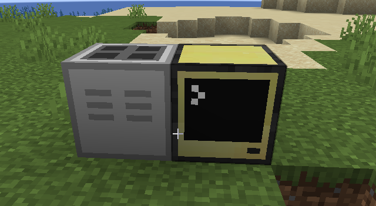
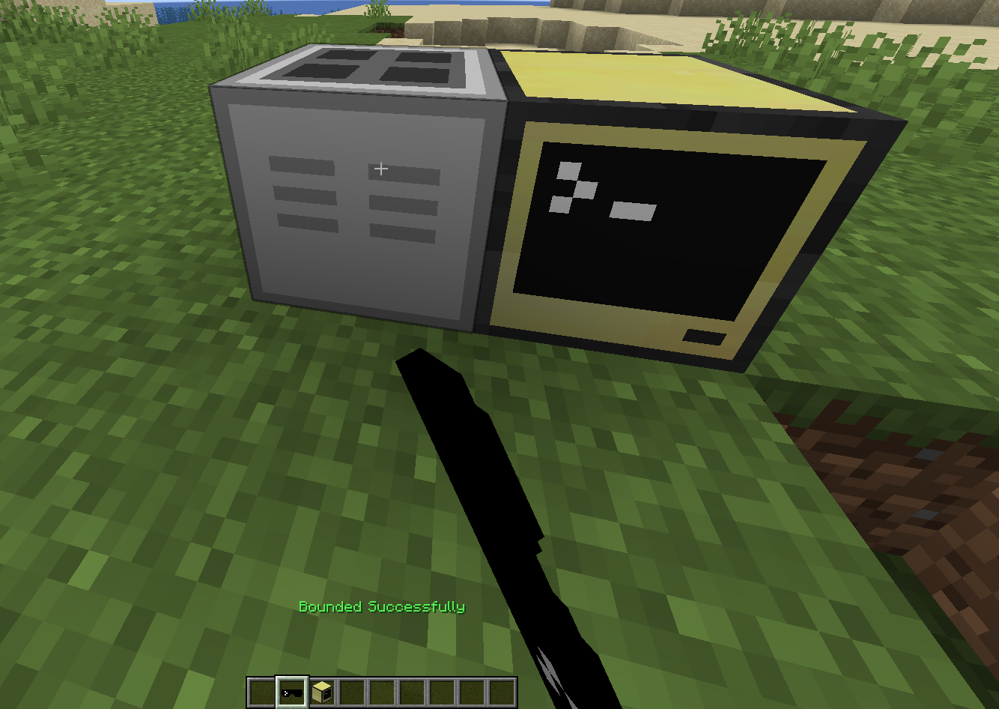
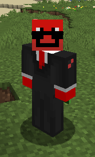
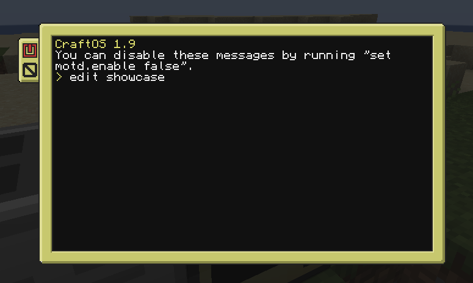
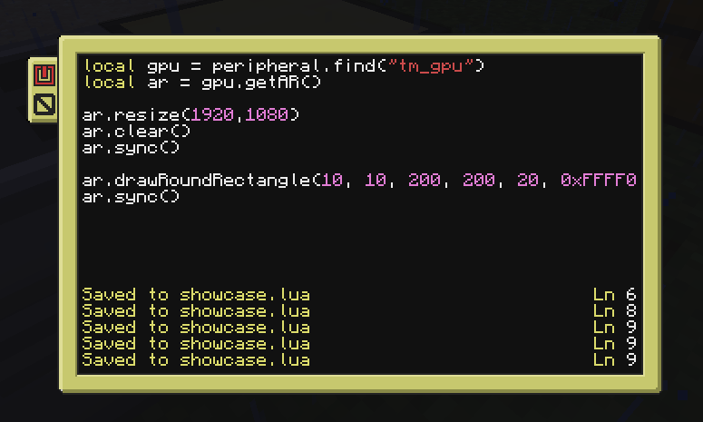
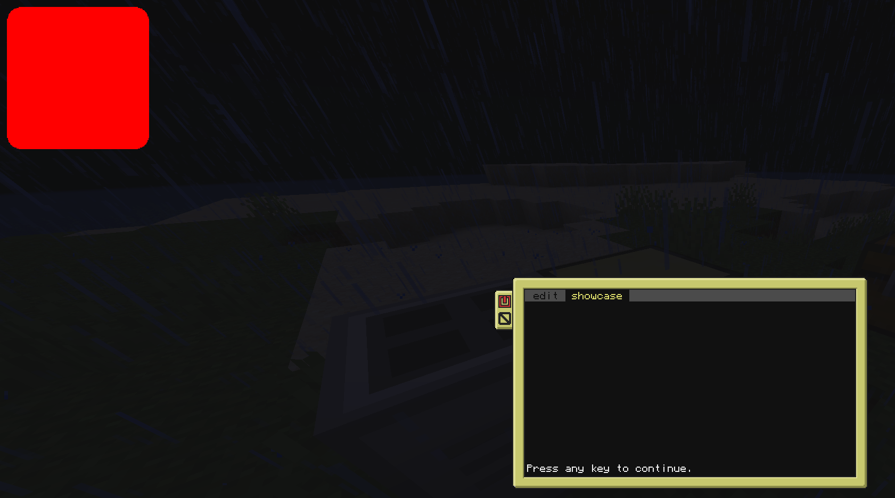

hwo do i use ar goggles??
First off you will need a GPU, AR Goggles, and an Advanced Computer. JEI has all of the recipes, so get those crafted.
Then you want to place the gpu and computer like this

Then bound your ar goggles to your gpu, by sneaking and right clicking the gpu. You can unbound by sneak clicking the air.

Now put on your goggles.

Now we can actually start rendering and reading inputs from the ar goggles! I won't explain everything as I'll assume you have an idea on how to program in computer craft, if not there are some great youtube tutorials.
Now open up your computer by right clicking it and you will be met with the terminal. Start with typing "edit *" * being any filename you choose. Ill be calling mine showcase.

Now we can create the program, and here the first thing I do is set the resolution of the AR goggles with ar.resize(width, height). Then I clear the screen, and finally sync().
If you forget to sync nothing will show on your screen, everytime you execute a function for the ar goggles it gets added to a server side queue, and when you call ar.sync() it sends the entire queue to the client to render it
Then we just create the square with ar.drawRoundRectangle(x, y, width, height, radius, color), now you might think color?? wth is 0xFFFF0000
This is just another format for color basically you start with 0x, and there are 2 numbers or letters for every channel. ARGB, first 2 numbers are FF and those correspond to 100% so the alpha is 100. The second channel is red and again I did FF which is 100%, then for channel g and b I did 00 which is 0 so no green or blue color. So we should have a fully opaque red round square. You don't have to memorize any of that, just use a rgb to argb hex convertor.
Here's a nice tool to visualize the channels: https://hugabor.github.io/color-picker/ thats if you want to understand it.
If you just want to pick a color use this tool, remember to copy the ARGB hex: https://www.myfixguide.com/color-converter/

For navigating the file editor press ctrl, this lets you save, run, and exit. With the arrow keys and enter key.

BOOM 67, we got the red square. Thats about all for the tutorial, here is the full code also
local gpu = peripheral.find("tm_gpu")
local ar = gpu.getAR()
ar.resize(1920, 1080)
ar.clear()
ar.sync()
ar.drawRoundRectangle(10, 10, 200, 200, 20, 0xFFFF0000)
ar.sync()Here is a quick showcase of what it looks like running:
ar goggles docs
Here is all the stuff you can actually do with the api. also remmeber to keep the numbers like x y width height, u can use math.floor()
base commands
ar.resize(width, height)
this just resizes the overlay not your monitor, use whatever suits ur needs.
ar.clear()
this clears the overlay screen and removes all commands in queue.
ar.sync()
IMPORTANT as shown before this is what makes the server tell the client what the computer has been doing.
input
ar.captureMouse()
this opens an invisible screen which then releases the mouse letting u make custom interfaces n stuff. To get out just press esc or right alt.
ar.releaseMouse()
closes the screen letting you go back to minecraft interface
custom fonts
ar.loadFont(path, name)
this is to load a .ttf font if you want something custom, advanced contact me if you get this far.
ar.getCustomTextLength(text, size, fontName)
how many pixels wide the certain text u rendered with your font is.
text rendering
ar.drawText(x, y, text, color, scale)
uses default minecraft chunky text to render, SIZE IS AN INTEGER
ar.getTextLength(text)
how many pixels wide the default text is
ar.drawCustomText(x, y, text, color, size, fontName)
draws the custom font which is a lot smooth usually, size can be a float aka have decimals.
events
"ar_click", button, x, y- button 0 is left, 1 is right, 2 is middle."ar_up", button, x, y- same but when you let go."ar_move", x, y- fires every tick if your mouse moved."ar_scroll", direction, x, y- positive/negative depending on the scroll wheel."ar_char", character- the actual letter typed /li>"ar_keydown", keycode/"ar_keyup", keycode- raw GLFW hardware IDs (like 257 for Enter). Serach it up if u need the lwjgl keycods"ar_escape"- fires when you press right ALT or ESC to break the mouse lock. listen for this so you can break while true loops.
drawing!!!
ar.drawRectangle(x, y, w, h, color)
solid rectangle
ar.drawRectangleOutline(x, y, w, h, thickness, color)
rectangle outline
ar.drawRoundRectangle(x, y, w, h, radius, color)
solid rectangle but with radius parameter
ar.drawRoundRectangleOutline(x, y, w, h, radius, thickness, color)
round rectangle outline
ar.drawSmoothLine(x1, y1, x2, y2, color, thickness)
draws a smooth line
ar.drawItem(x, y, itemId, scale)
this draws an item using its item id so if u want a diamond its "minecraft:diamond". scale is an integer